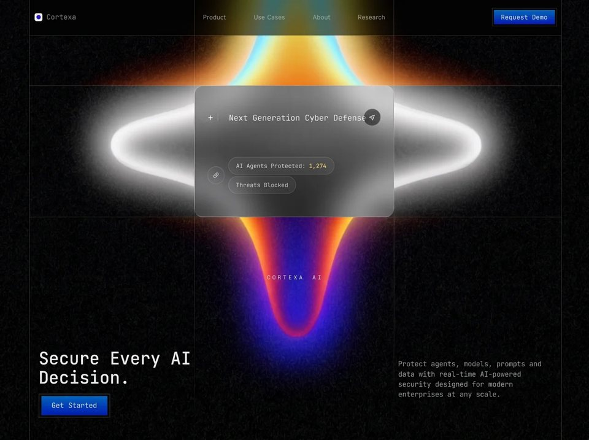

AI Cyber Defense
Securitysecurityyilai-ai 公开页面
收录时间：2026-08-20正文：10,662 字符

本地预览图 · jpeg
完整提示词
**Recreate this exact full-screen AI cybersecurity landing page, pixel-faithful.** Single-page HTML + CSS + a tiny mobile-menu script. No frameworks. No extra sections. No scroll on desktop. Black cinematic hero only.
**Page title:** `Cortexa — Secure Every AI Decision`
---
### BACKGROUND VIDEO (mandatory, exact URL)
Full-viewport looping background video, behind everything:
```
https://d8j0ntlcm91z4.cloudfront.net/user_38xzZboKViGWJOttwIXH07lWA1P/hf_20260808_064251_c78c4e3f-1d2f-485e-9ca4-56976efd496f.mp4
```
Attributes: `autoplay muted loop playsinline preload="auto"`. Wrapper `.bg-media` is `position: fixed; inset: 0; z-index: 0; background: #000; overflow: hidden; pointer-events: none`.
Video CSS:
- `position: absolute; top: 50%; left: 50%`
- default size `width: 103%; height: 103%; max-width: none`
- `object-fit: cover; object-position: center`
- `transform: translate(-50%, -50%) translateX(-1.65%)`
- tall screens ≥1200px height: size `101.5%`
- ≥1440px height: size `101%`
- ≤860px: size `100%`, `object-position: 51.5% 50%`, transform only `translate(-50%, -50%)` (drop the extra X shift)
Visual content of the video: dark grainy void, a large soft four-point star / cross glow in the center. Upper arm indigo → warm orange-red. Lower arm dark blue → cyan/teal. Horizontal arms soft white. Center dark/translucent. Do not replace this file. Do not generate a substitute video.
Intro animation: wrapper `fade-in` 1.5s ease both.
---
### FONTS (exact Google Fonts)
Load:
```
https://fonts.googleapis.com/css2?family=Inter:wght@400;500;600&family=JetBrains+Mono:wght@400;500;600;700&display=swap
```
Plus preconnect to `fonts.googleapis.com` and `fonts.gstatic.com`.
CSS variables:
- `--font-sans: "Inter", system-ui, sans-serif`
- `--font-mono: "JetBrains Mono", ui-monospace, monospace`
Usage:
- Body / plus sign: Inter
- Brand name, nav is Inter, almost everything else is JetBrains Mono: brand wordmark, buttons, card title, pills, H1, “CORTEXA AI”, description, mobile nav
- Antialiased: `-webkit-font-smoothing: antialiased; -moz-osx-font-smoothing: grayscale`
---
### COLOR TOKENS
```
--bg: #000000
--grid: rgba(255, 255, 255, 0.22)
--text: #e8e8e8
--nav: #b6b6b6
--muted: #7a7a7a
--gold: #e4d08a
--blue-1: #1a6fff
--blue-2: #0046f0
--blue-3: #002fd4
--glass: rgba(10, 10, 12, 0.42)
```
Body: black, `#e8e8e8` text, `overflow: hidden` (auto only if height ≤800px or width ≤860px).
---
### ARCHITECTURAL GRID (the whole layout is this grid)
Four vertical 1px lines at:
- `--line-left: 5.371%`
- `--line-c1: 33.203%`
- `--line-c2: 66.797%`
- `--line-right: 95.02%`
Three horizontal 1px lines at:
- `--header-h: 8.286vh`
- `--band-h: calc(21.286vh - 20px)`
- `--card-h: calc(46.857vh + 7px)` (this is also `--card-line`)
Horizontal lines span only from left vertical to right vertical.
Center verticals (`v-c1`, `v-c2`) fade out below the card line:
`linear-gradient(to bottom, grid 0, grid var(--card-line), transparent 100%)`.
Grid overlay `z-index: 20`, `pointer-events: none`.
**Draw-on load:**
- verticals `draw-y` (scaleY 0→1, origin top center), 1.05s `cubic-bezier(0.22, 1, 0.36, 1)`
- horizontals `draw-x` (scaleX 0→1, origin left center), same easing/duration
- delays: v-left 0.12s, h-header 0.18s, v-c1 0.22s, v-c2 0.30s, h-band 0.32s, v-right 0.38s, h-card 0.46s
Height tweaks:
- width ≥861px AND height ≤1199px: `--card-h: calc(46.857vh + 27px)`
- height ≥1200px: `--band-h: calc(21.286vh - 48px); --card-h: calc(51vh + 8px)`
- height ≥1440px: `--band-h: 16.8vh; --card-h: 55vh`
≤860px: hide center verticals, side lines become 20px / `calc(100% - 20px)`.
---
### CSS GRID LAYOUT (5 columns × 5 rows, 100dvh)
Columns:
`5.371%` | left cell | center cell | right cell | remaining right gutter
Rows:
header `8.286vh` | band to header | card to band | leftover | auto footer copy
`z-index: 10` for UI, video behind, grid on top of UI so lines cut across.
---
### HEADER (row 1, columns 2–4)
**Frosted header bar** `.header-bar` spans columns 2–5, row 1:
- `background: rgba(0, 0, 0, 0.55)`
- `backdrop-filter: blur(22px) saturate(140%)` (and `-webkit-`)
This is the glass strip behind logo / nav / CTA.
**Brand (col 2):**
- 22×22 SVG: rounded square `rx=7`, fill `#f3f3f3`, inset rect `x=1.2 y=1.2 w=29.6 h=29.6`
- inner circle r=8.2 at 16,16 with radial gradient `#3a2ad4` 0% → `#1c0eaa` 55% → `#0a0860` 100%, cx 38% cy 32% r 72%
- word “Cortexa” JetBrains Mono 400, `clamp(15px, 1.55vw, 18px)`, letter-spacing 0.02em, color `#949493`
- gap 0.62rem, padding-left 0.85rem
**Nav (col 3):** Product / Use Cases / About / Research
Inter 400, `clamp(13px, 1.38vw, 16px)`, color `#b6b6b6`, space-between, padding `0 1.4rem`. Hover → `#fff` in 0.2s.
**Request Demo (col 4, right aligned):**
Button system is a **double frame**:
- outer `.btn-frame`: black `#050505`, `3px solid #2a2a2a`, padding 4px, square corners (header CTA uses padding 3px / border 2px)
- inner `.btn`: JetBrains Mono 400, color `#f4f7ff`, letter-spacing 0.04em, `1px solid #0d1220`, square
- fill: `linear-gradient(180deg, #0170c4 0%, #0058b8 18%, #0039c4 55%, #0018ae 100%)`
- inset highlight `inset 0 1px 0 rgba(255,255,255,0.16)`
- hover: `filter: brightness(1.08); transform: translateY(-1px)` 0.25s
- demo size: height `clamp(32px, 4.8vh, 38px)`, min-width 8rem, font `clamp(12px, 1.15vw, 14px)`
Burger (hidden ≥1025px): 44×44, three 20×1.5px `#e8e8e8` bars, gap 6px. Hover shrinks first and last bar to 16px width.
Header items animate `fade-down` 0.7s (opacity 0 + translateY -12px). Delays: bar 0.12, brand 0.18, nav links 0.24 / 0.30 / 0.36 / 0.42, CTA+burger 0.46.
---
### DESAT BAND
`.card-desat` full width, **grid row 3 only**: `backdrop-filter: grayscale(1)` with no extra fill. This greyscales the video through the middle band behind the glass card.
---
### GLASS HERO CARD (center column, row 3)
Sits in the middle column between the two center verticals, filling the card row.
Exact glass:
```
background: linear-gradient(90deg,
rgba(48,48,52,0.28) 0%,
rgba(78,78,84,0.16) 55%,
rgba(110,110,118,0.10) 100%);
backdrop-filter: grayscale(1) blur(28px);
border: 1px solid rgba(255,255,255,0.16);
border-radius: 22px;
padding: 1.5rem 34px;
overflow: hidden;
container-type: inline-size;
```
Inner wash `::before`:
`linear-gradient(90deg, rgba(18,18,20,0.16) 0%, rgba(255,255,255,0.05) 100%)`
**Top row:**
- white “+” Inter 1.2rem
- 1×17px divider `rgba(255,255,255,0.22)`
- title `Next Generation Cyber Defense` — JetBrains Mono 400, color `#f4f4f4`, `clamp(13px, 4.15cqw, 20px)`, nowrap
- right: circular send/paper-plane button 38×38, `border: 1px solid rgba(210,210,210,0.38)`, `background: rgba(8,8,8,0.55)`, color `#e6e6e6`. SVG paper-plane (not a play triangle): outlined path stroke 1.55, plus a second stroke from the fold to the tip. Hover: fill `rgba(255,255,255,0.08)`, border 0.5 white, scale 1.06
**Bottom row:**
- circular link-chain icon 38×38, border `rgba(255,255,255,0.18)`, icon `#ffffffc7`
- two pills, JetBrains Mono, `#d0d0d0`, pill radius 999px, border `rgba(255,255,255,0.16)`, fill `rgba(255,255,255,0.05)`
1. `AI Agents Protected: 1,274` — the number is `<em>` gold `#e4d08a` weight 500, not italic
2. `Threats Blocked`
- pill hover: border 0.32 white, fill 0.09 white
Inner vertical gap `clamp(2.75rem, 6.4vh, 5.5rem)`. Card `rise-in` 0.9s delay 0.38s; top 0.55s; stats 0.70s. Easing `cubic-bezier(0.22, 1, 0.36, 1)`.
Large screens (≥1440×1051): title up to 26px cqw, play/link 44px, pills 14–18px with 0.68rem/1.2rem padding.
---
### BELOW THE CARD
**Center, row 4:** `CORTEXA AI`
JetBrains Mono 400, `clamp(14px, 1.55vw, 20px)`, uppercase, letter-spacing **0.42em**, word-spacing 0.42em, text-indent 0.42em, color `#d4d0cc`, centered, `padding-top: min(145px, 16vh)`. Fade-in 1s delay 0.72s. Mid-height desktops force 14px.
**Left, row 5:** H1
```
Secure Every AI
Decision.
```
Hard line break after “AI”. JetBrains Mono **500**, `#ececec`, line-height 1.12, nowrap, size `clamp(22px, calc(100cqw / 9.05), 56px)` (container query on `.hero-copy`). Below it: **Get Started** using the same framed blue button as demo but larger: height `clamp(42px, 6.6vh, 50px)`, min-width 10rem, font `clamp(14px, 1.4vw, 17px)`, frame padding 4px / 3px border. Copy padding `0 0.4rem 5.4vh 1.55rem`, gap 0.95rem. H1 rise-in 0.85s @ 0.48s, button 0.8s @ 0.66s.
**Right, row 5:** description JetBrains Mono, `clamp(13px, 1.45vw, 18px)`, line-height 1.45, color `#8d8d8d`:
> Protect agents, models, prompts and data with real-time AI-powered security designed for modern enterprises at any scale.
Padding `0 20px calc(5.4vh + 20px) 0.7rem`. Rise-in 0.85s @ 0.58s.
---
### MOBILE MENU (≤1024px hide nav + header CTA)
Full-screen overlay `z-index: 40`:
`background: rgba(0,0,0,0.62); backdrop-filter: blur(22px) saturate(140%)`
Closed: opacity 0, `translate3d(0,-18px,0)`, `clip-path: inset(0 0 100% 0)`, pointer-events none.
Open class `.is-open`: opacity 1, transform none, `clip-path: inset(0)`.
Transition: opacity 0.45s ease, transform 0.5s the cubic, clip-path 0.55s the cubic.
Links Product / Use Cases / About / Research — JetBrains Mono `clamp(18px, 5vw, 22px)`, `#d8d8d8`, gap 1.15rem, padded from top 80px. Request Demo uses the large start-button style (48px / min-width 11.5rem). Stagger `rise-in` 0.55s delays 0.14 / 0.22 / 0.30 / 0.38 / 0.48s.
JS: burger opens (hidden=false, body.menu-open, double rAF then `.is-open`). Close on X, any link, Escape. After close, wait 480ms then `hidden=true`. Close icon is two 20×1.5px bars rotated ±45°.
≤860px: 3-column layout 20px | 1fr | 20px. Stack: header, empty band, glass card, CORTEXA AI, H1, description, Get Started. H1 `clamp(26px, 8vw, 36px)` and wrapping allowed. `.hero-copy { display: contents }` so h1 / desc / button become separate grid rows.
---
### MOTION KEYFRAMES (must exist)
- `fade-in`: opacity 0→1
- `fade-down`: opacity 0 + translateY -12px → none
- `rise-in`: opacity 0 + translateY 18px → none
- `draw-y` / `draw-x`: scale 0→1 on the matching axis
`prefers-reduced-motion: reduce` kills all of the above, forces opacity 1 / no transform, no mobile clip transition, no hover translate/scale.
No other pages. No footer. No cookie banner. No Lottie. No extra JS besides the menu. Reproduce the glass, grid percentages, video URL, button double-frame, gold `1,274`, paper-plane send icon, and staggered load choreography exactly.把上面的提示词完整复制到支持长文本的 AI 工具中，再按需要替换品牌名、配色与文案。提示词描述的是整页结构与动效节奏，生成后建议在真实浏览器里检查首屏加载和移动端表现。
来源与版权
该条目来自公开提示词页面，原始出处信息未随页面提供。
提示词文本与预览素材的版权归原作者或原平台所有，本站仅作索引与归档。若你是权利人并希望移除本条内容，请通过联系方式告知。